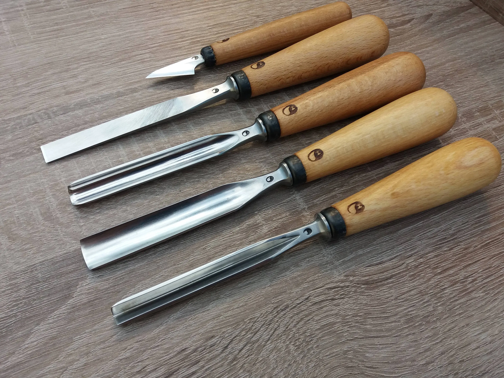
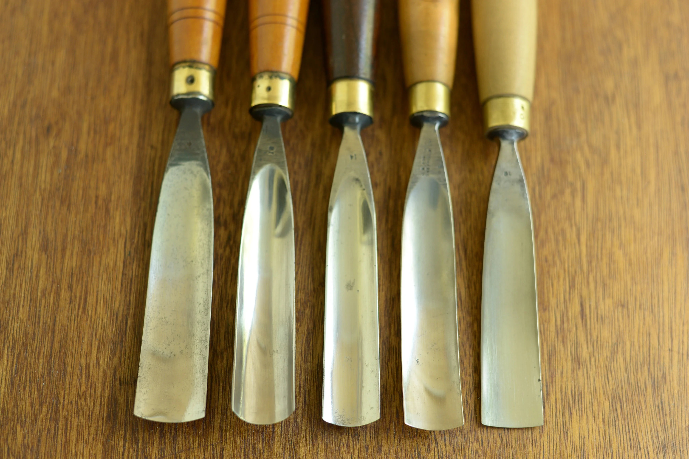
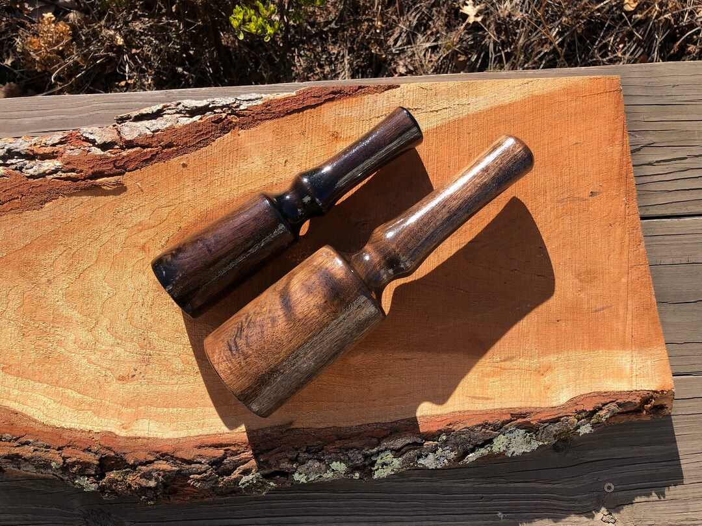
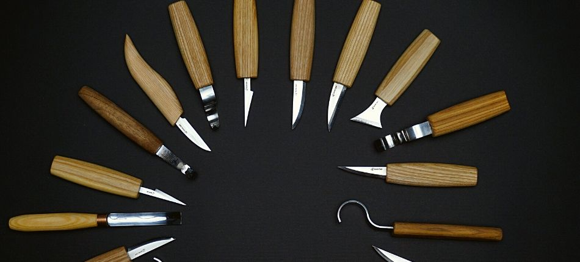
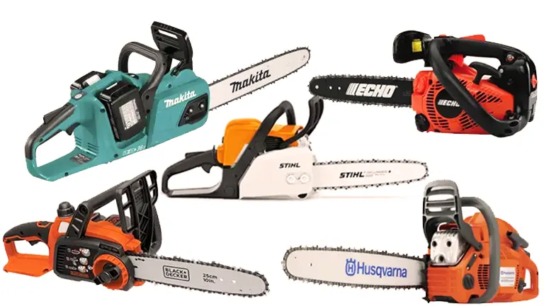

Essential Wood Carving Tools
- Chisels: Ideal for shaping and detailing.
- Gouges: Perfect for scooping out wood material.
- Mallets: Helps apply precise force to chisels.
- Knives: Great for fine details and whittling.
- Chainsaw:Used to rough shape, carve intricate designs, add texture, and cut wood.